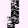
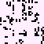

GlitchDexES/RB:230
From Glitch City Wiki
Jump to navigationJump to search| &Ò ö | |
| Front: Back:  | |
| Bulbapedia link | None |
| Equivalent glitch Pokémon | 『ÍÙ Í 9ゥ ᴀ (Spanish Yellow) |
| Generation II equivalent | |
| Generation II Pokémon needed for Time Capsule exploit | |
| Name bytes | |
| Index number (hex) | E6 |
| Index number (dec) | 230 |
| Pokédex number (Family) |
240 |
| Pokédex marker byte | |
| Pokédex flag (seen) | |
| Pokédex flag (own) | |
| Type(s) | Fire/Glitch |
| Category | |
| Height | 8.0m |
| Weight | 08.5kg |
| Palette attribute byte | |
| Catch rate constant | |
| Experience group | EXP = n^3- 86 n^2 + 136n - 81
Experience at level 100- 761 Experience at level 255- 8590286 |
| Experience yield | |
| Sprite dimensions (base data) | |
| Front sprite source pointer | |
| Back sprite source pointer | |
| Front sprite dimensions (actual) | |
| Back sprite dimensions (actual) | |
| ← Previous glitch Pokémon | Current glitch Pokémon | Next glitch Pokémon → |
|---|---|---|
| C (E5) | &Ò ö (E6) | ápゥ Ó 4♀ (E7) |
&Ò ö is a dual-type Fire/Glitch type glitch Pokémon in Pokémon Red and Blue (Spanish).
『ÍÙ Í 9ゥ ᴀ is the equivalent trade glitch Pokémon in Pokémon Yellow.
It cannot be caught with the Trainer escape glitch or another means of instant encounter, as a Rocket battle will be initiated instead.
Contents
Methods to obtain
- Party remaining HP glitch or storage box remaining HP glitch with a remaining HP of 230.
- CoolTrainer♀ corruption ("?" character).
- LOL glitch ("?" character)
- International fossil conversion glitch with an Attack stat of 230.
- Double distort CoolTrainer♀ corruption ("?" character)
- Equivalent trade of『ÍÙ Í 9ゥ ᴀ from Pokémon Yellow.
- Arbitrary code execution
Starting moves
- Mist
- Mist
- Glitch Move 0x00
- Bind
Evolution(s)
No known evolutions
Pokédex data
Level-up moves
- Glitch Move 0x00 (Level 4)
- Horn Drill (Level 5)
- Poison Sting (Level 6)
- Mega Kick (Level 119)
- TM45 (Level 184)
- Wing Attack (Level 195)
- TM40 (Level 206)
- TM33 (Level 234)
- TM33 (Level 250)
- TM01 (Level 251)
TM/HM moves
- TM05 Mega Kick
- TM06 Toxic
- TM07 Horn Drill
- TM09 Take Down
- TM15 Hyper Beam
- TM25 Thunder
- TM28 Dig
- TM35 Metronome
- TM38 Fire Blast
- TM43 Sky Attack
- TM46 Psywave
Base stats
| Base Stats | Level 50 Stat Range | Level 100 Stat Range |
|---|---|---|
| 10 HP | 70-116 | 130-223 |
| 123 Attack | 128-174 | 251- 344 |
| 112 Defense | 117-163 | 229-322 |
| 123 Speed | 128-174 | 251-344 |
| 0 Special | 5-51 | 5-98 |
| This article or section is a stub. You can help Glitch City Wiki wiki by expanding it. |